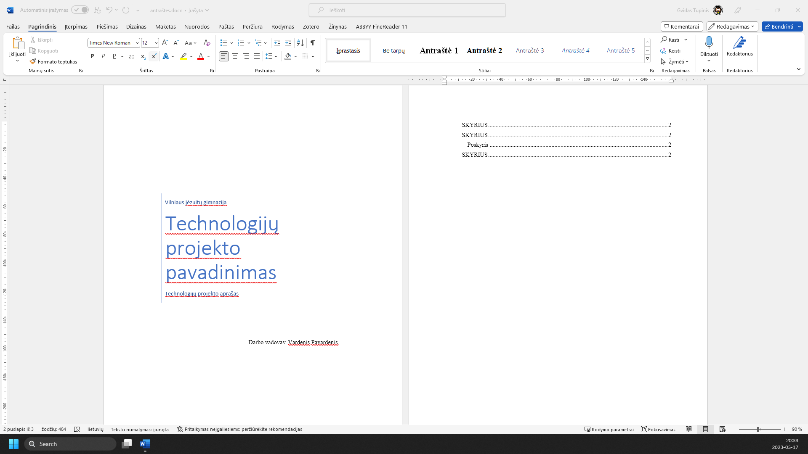
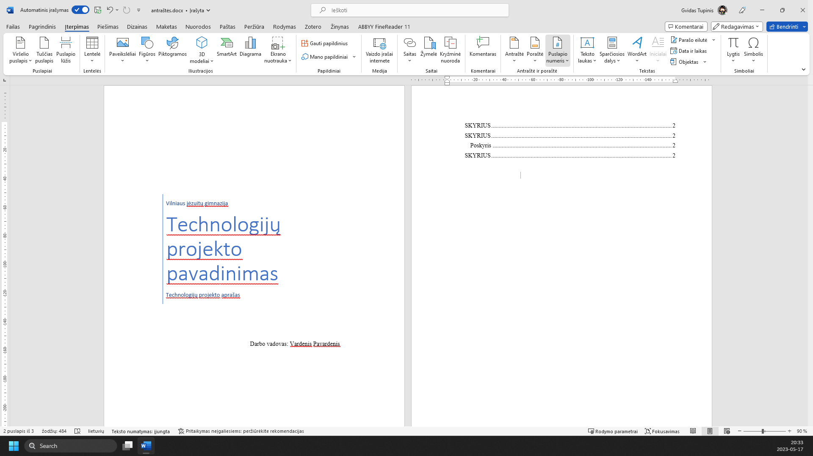
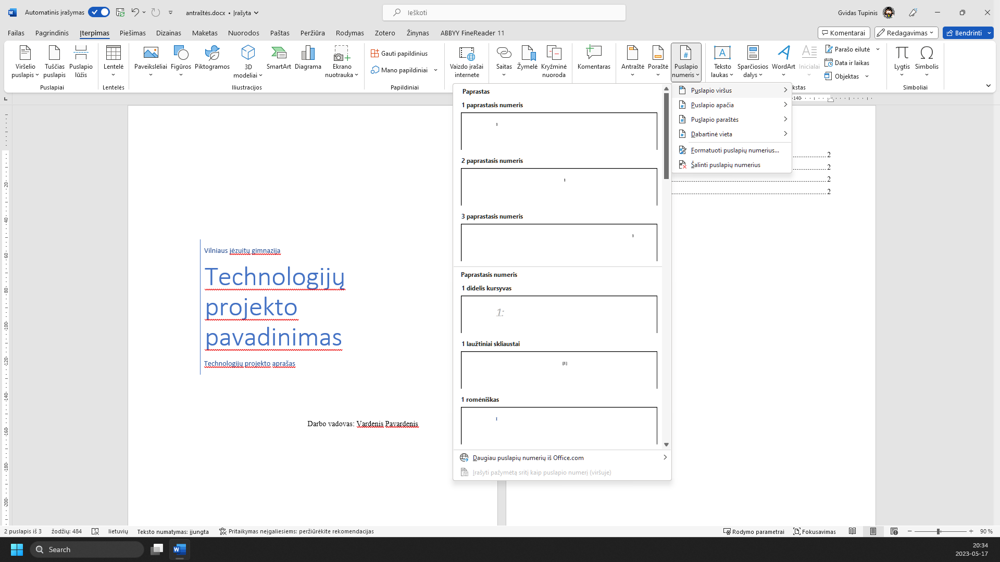
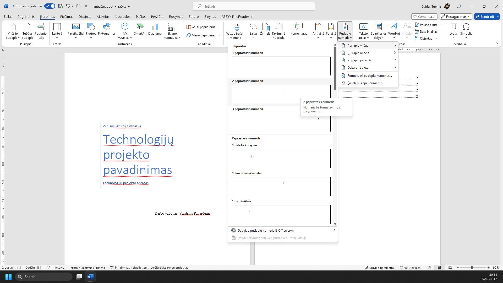
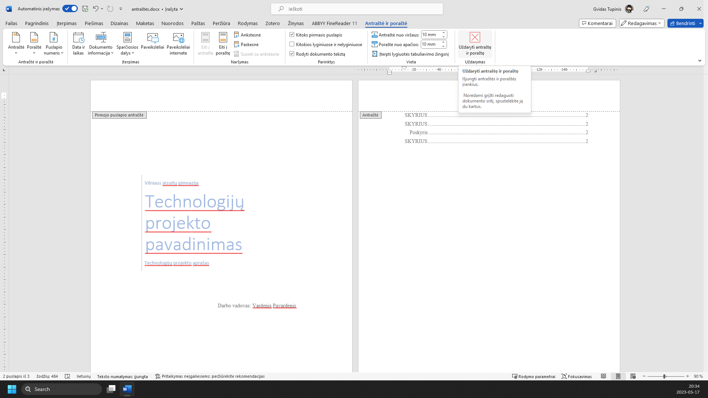

RAŠTO DARBO RENGIMAS
Puslapių numeravimas
1 žingsnis iš 5
1.
Atidarome meniu ‘Įterpimas’

2.
Įrankių juostoje pasirenkame ‘Puslapio numeris’

3.
Pasirenkame ‘Puslapio viršus’

4.
Ir pasirenkame ‘2 paprastasis numeris’ (arabiški skaitmenys viduryje)

5.
Šiuo metu esame antraštės redagavimo režime. Norėdami jį išjungti, spaudžiame mygtuką ‘Uždaryti antraštę ir poraštę’

Žaliai apibrėžta vieta rodo, kur paspausti. Vaizdą gali padidinti naršyklės mastelio valdikliu. Žingsnius taip pat keičia klaviatūros rodyklės.